Mental Health and Intersectionality
MODULE 3
Pre-Module Self-Reflection
Before you get started with the module content, take a few minutes to consider your answers to the questions below.
How do you self-identify? What communities are you a part of?
Think of an experience where you felt conscious of your own race, class, gender, migration status, disability, sexual identity, or other aspects of your identity.
How do your identities affect the role that you have in group settings or in personal relationships?
Do you consider yourself to be a privileged person? Why or why not?
1. Defining Important Terms in Intersectionality
1.1 Defining and acknowledging Privilege
Privilege is defined as “a special right, advantage, or immunity granted or available only to a particular person or group”. After watching the video below, reflect on your own privilege - think back to the questions asked at the start of the module. Have your answers changed?
1.2 What is Intersectionality?
The term intersectionality was first coined by Kimberlé Crenshaw in 1989, defined as “a lens through which you can see where power comes and collides, where it interlocks and intersects.”
The concept of intersectionality refers to the interconnected relationships between a variety of aspects of identity, including (but not limited to) race, class, (dis)ability, sexual orientation, and/or gender on an individual or group level. In the context of mental health, an intersectional lens provides a unique perspective into the “overlapping and interdependent systems of discrimination or disadvantage”.
1.3 Intersectional Stigma
Intersectional stigma is a concept whereby individuals who identify with multiple marginalized groups (i.e., groups and communities that experience discrimination and exclusion) experience joint effects on their health and overall well-being (Turan et al. 2019). The diversity of peoples’ experiences are brought to light with the recognition of intersectionality in mental illness and stigma.
There are many intersecting factors that can impact your mental health, including those shown in the flip cards below.
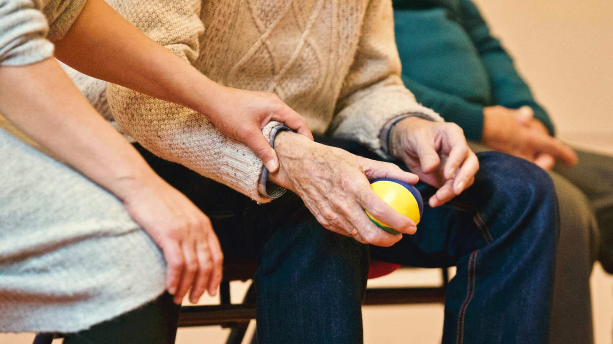
AGE
click to flip
SEXUAL ORIENTATION
click to flip
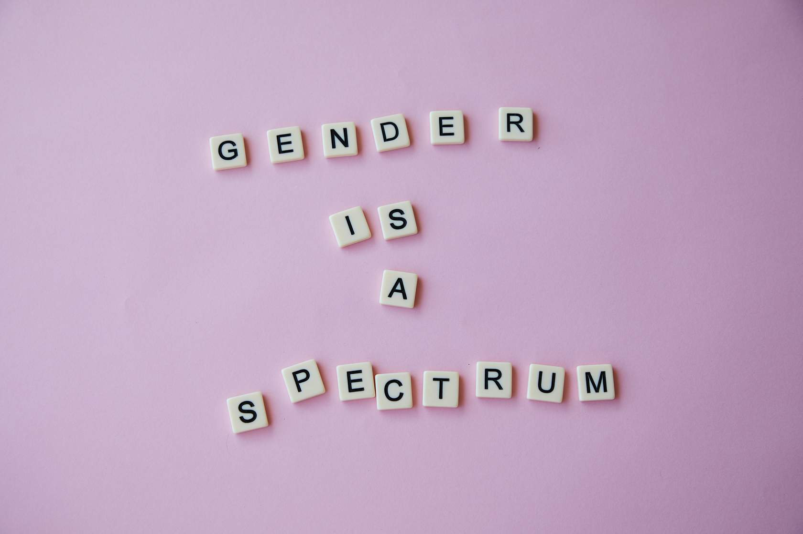
GENDER IDENTITY
click to flip
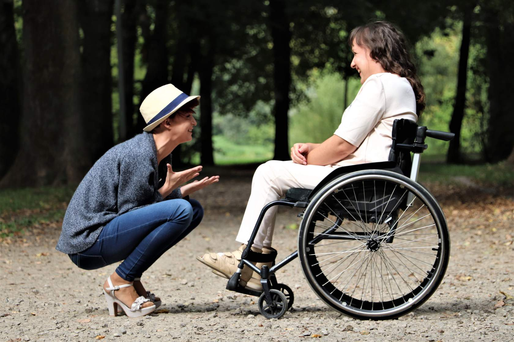
DISABILITY STATUS
click to flip
RACE/ETHNICITY
click to flip
RELIGION
click to flip
1.4 Equality vs. Equity
Equality means that everyone is given the same resources or opportunities, while equity recognizes that each person has different circumstances, and allocated the exact resources and opportunities needed to reach an equal outcome. Put differently, equality is about equal shares, while equity is about fair shares.
1.5 Section Summary
In this section, we defined key terms that we will come back to again and again: privilege, intersectionality, equity and equality. In the next section, you'll be introduced to the main marginalized groups and communities that we will focus on throughout the remainder of this module.
2. Marginalized Communities
Marginalized populations are communities that experience discrimination and exclusion due to unequal power distributions socially, economically, and politically. There are many types of marginalized communities, including, but not limited to members of the disabled community, racial and cultural minority communities, and LGBTQ+ communities.
2.1 Disability Status
The CDC defines disability as “any condition of the body or mind (impairment) that makes it more difficult for the person with the condition to do certain activities (activity limitation) and interact with the world around them (participation restrictions)” (Centers for Disease Control, 2020).
Disabilities can range from those related to vision, movement, thinking, remembering, learning, communicating, hearing, mental health, and social relationships. The term “person living with a disability” (PLD) is often used as an overarching term for individuals with disabilities, however the experiences of individuals who share the same disability can be very different.
Who is affected by disability?
- 1.1 billion people globally live with a disability (WHO, 2011)
- In Canada, 1 in 5 individuals aged 15 years or older identify as living with a disability (Statistics Canada, 2018)
As you may have learned in our introductory module, living with a well-managed mental illness is not an inherently “bad” thing. Similarly, living with a disability is not “bad” - in fact, a common myth is that individuals living with a disability wish that they weren’t. Watch Dylan Alcott debunk this myth in his video below, and learn more about his lived experience growing up disabled.
World Report on Disability
Learn more about disability worldwide in the World Health Organization's World Report on Disability (2011).
Disability and Mental Health
So how does disability effect mental health? Persons living with a disability (PLD) experience negative impacts on their mental health through the impacts of accessibility, ableism, and stigma. Flip the cards to see each of these terms defined.
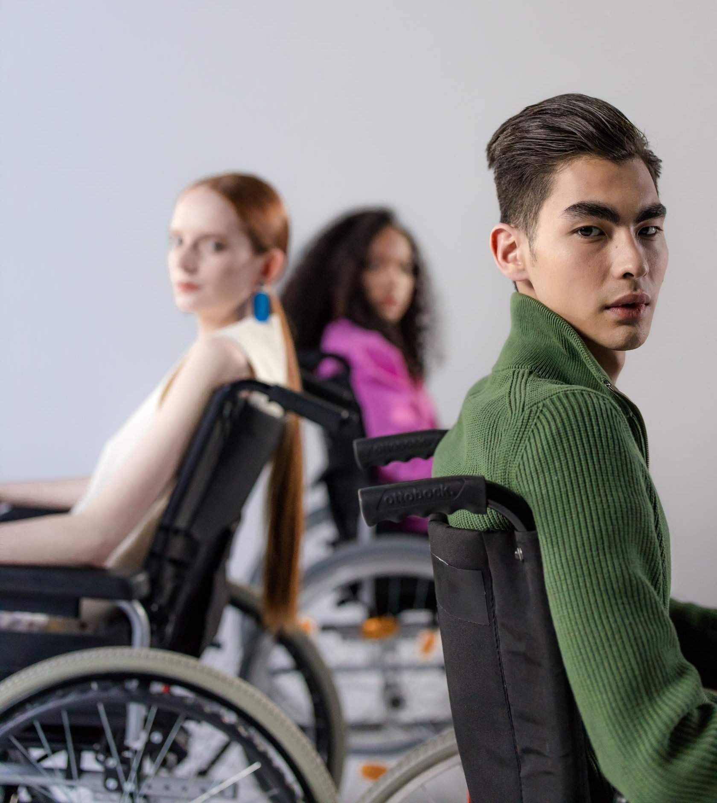
Accessibility
Accessibility is met when the needs of people living with disabilities are specifically considered, and products, services, and facilities are built or modified for equal use.
click to flip
Ableism
Discrimination and social prejudice against people living with disabilities and/or people who are perceived to be living with a disability.
click to flip
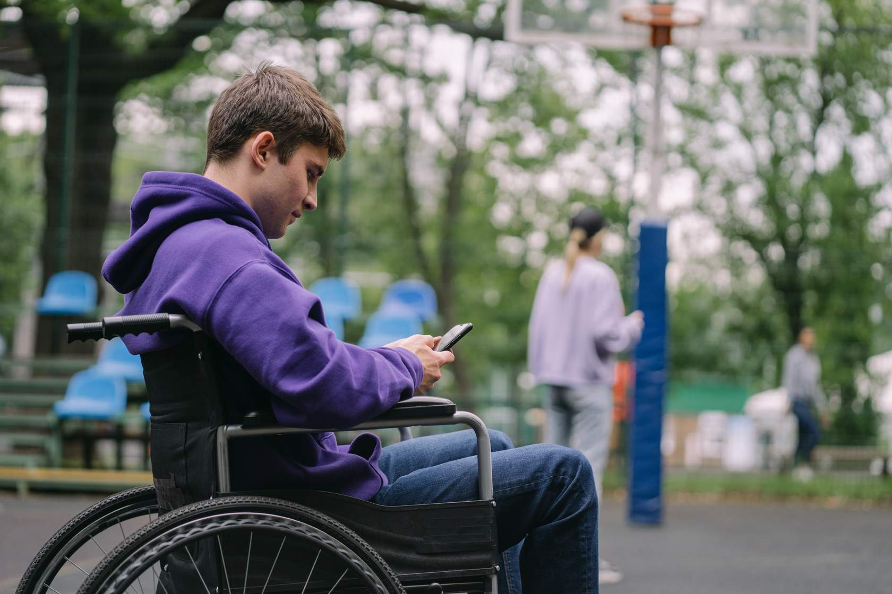
Stigma
Stigma is discrimination and/or prejudice against an individual or group based on perceivable social characteristics that somehow distinguish them from other members of a group. In the context of disability, stigma is often the result of false assumptions (i.e., people living with disabilities are unable to learn).
click to flip
2.2 BIPOC Communities
BIPOC refers to Black, Indigenous, and People of Color. The term BIPOC was created to bring attention to the marginalization of Black and Indigenous populations and to undo Indigenous invisibility, anti-Blackness, dismantle white supremacy, and advance racial justice.
Canada is home to a diverse population - more than 200 ethnic origins were reported in the (2011 National household Survey (NHS)).
- On the 2016 census, 22% of Canadians identified as belonging to a visible minority, representing about 1 in 5 Canadians. The three largest visible minority groups were South Asian, Chinese and Black.
- Canada is also home to a number of Indigenous communities, including: First Nations, Métis, and Inuit. We will expand more on the unique experiences of Indigenous communities below.
Immigration and Ethnocultural Diversity
Learn more about diversity in Canada by checking out Statistics Canada's Immigration and Ethnocultural Diversity Statistics page for a deeper dive into key indicators and a more detailed breakdown.
BIPOC Communities and Mental Health
Members of BIPOC communities experience negative impacts on their mental health through the impacts of marginalization, racism, and microaggressions. Flip the cards to see each of these terms defined. For a deeper dive into race-related stressors and their mental health impacts, we recommend checking out (this article).
Marginalization
A social process by which individuals or groups are distanced from access to power and resources [and] constructed as insignificant, peripheral, or less valuable/privileged to a community or mainstream society.
click to flip
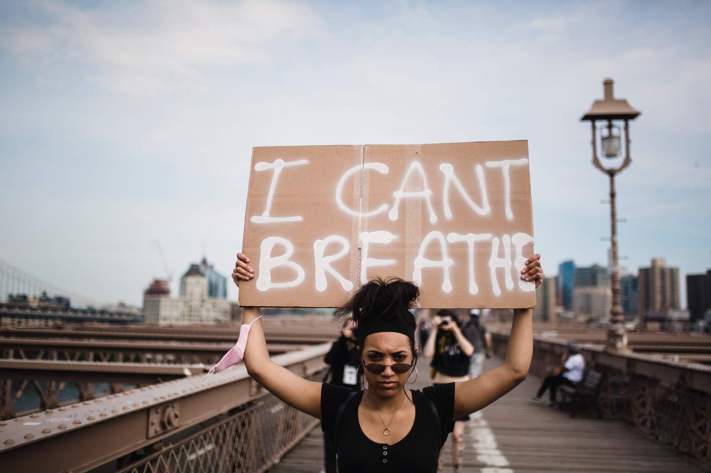
Racism
Marginalization and/or oppression of people of colour based on a socially constructed racial hierarchy that privileges white people.
click to flip
Microaggressions
Verbal, behavioural or environmental indignities, slights, put-downs and insults (intentional or unintentional) experienced by marginalized people that can cause ongoing stress and trauma.
click to flip
2.3 Indigenous Communities
In North America, Indigenous peoples is a collective term used to refer to the original inhabitants of these lands and their descents. The Canadian Constitution recognizes three groups of Indigenous peoples: First Nations, Metis, and Inuit. These distinct groups have unique histories, languages, cultural practices and beliefs.
- 1.67 million people in Canada identify as Indigenous (2016 Census)
- The Indigenous community is rapidly growing in Canada, and 44% are under the age of 25 (2016 Census)
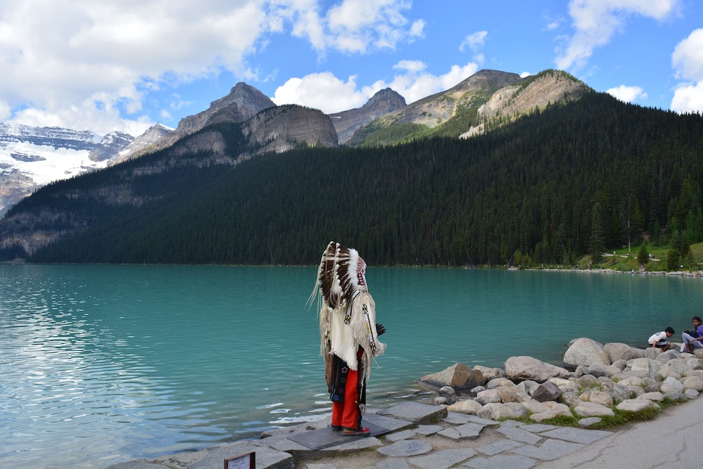
Indigenous Communities and Mental Health
Members of Indigenous communities experience negative impacts on their mental health through the impacts of colonialism, intergenerational trauma, and positionality in addition to those barriers faced by members of BIPOC communities. Flip the cards to see each of these new terms defined.
| Colonialism | A practice of domination where a political power from one territory exerts control over another territory through unequal power, economic exploitation, and an occupation of the territory with settlers. |
| Intergenerational Trauma | Oppressive or traumatic effects of historic event(s) that is passed down to the next generation. |
| Positionality | Refers to how differences in power and privilege influence identities and access in society. |
2.4 2SLGBTQIA+ Communities
The term 2SLGBTQIA+ is an acronym for two-spirit, lesbian, gay, bisexual, transgender, queer, intersex and asexual while + stands for other ways individuals express their gender and sexuality outside heteronormativity and the gender binary. The term can be used to describe a variety of sexual orientations and gender identities. These communities are constantly evolving to accept a diversity of gender identities, gender exploration, and sexual orientations. Therefore, the use of appropriate terminology is particularly important.
Gender Identity and Mental Health
Individuals belonging to the 2SLGBTQIA+ community often experience stigma, discrimination and marginalization over the course of their lives. Flip the cards to see each of these new terms defined in the context of this community.
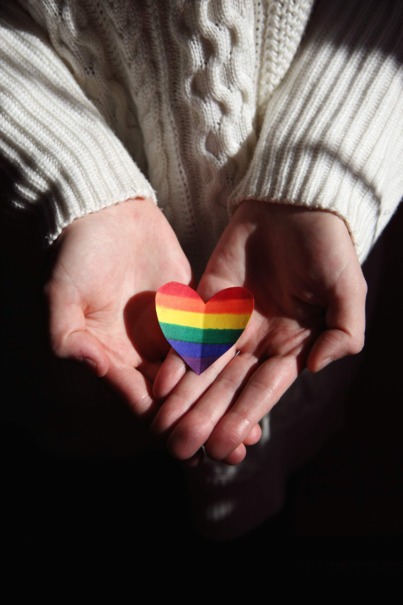
Stigma
Stigma is discrimination and/or prejudice against an individual or group based on perceivable social characteristics that somehow distinguish them from other members of a group. In the context of this community, stigma is often associated with heteronormative assumptions.
click to flip
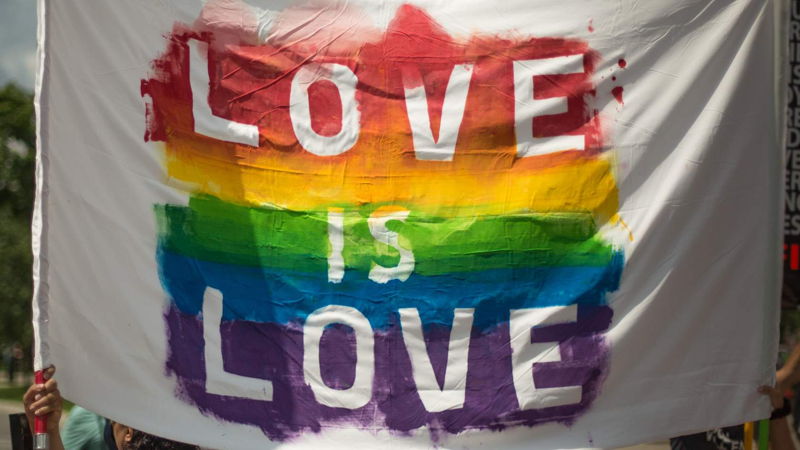
Discrimination
Discrimination occurs when someone is treated differently, or is not provided with the same opportunities as someone else due to some social or physical characteristic. In this context, members of the 2SLGBTQIA+ community may experience discrimination related to their sexual orientation or gender identity.
click to flip
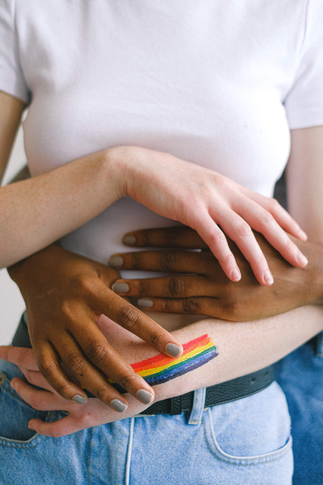
Marginalization
May include racism, sexism, poverty or other factors, alongside homophobia or transphobia that negatively impact mental health.
click to flip
2.4 Section Summary
In this section, we introduced you to the main marginalized groups and communities we will focus on throughout the remainder of this module. In the next section, we will go through each of these communities and their unique experiences with mental health in more detail.
3. Debunking Stigma and Myths
An intersectional lens is crucial to understanding the complex, multi-layered, and intersecting interplay between oppression and privilege.
There are common stereotypes and stigma associated with each community, which are harmful to peoples’ mental health and contribute to how communities may be neglected in receiving support. Debunking myths about these communities is an important step in improving access to mental health support among marginalized communities.
3.1 Disability
"A person's disability defines who they are as an individual"
Society often identifies individuals by their (dis)ability status and/or limitations with labels such as "the disabled" or "the epileptic". It is important to recognize that persons living with disabilities are people first.
"People living with disabilities are dependent on others and always need help"
It is important to recognize that disability does not mean dependency, and while people living with disabilities may require help with some things, so does anyone while performing difficult tasks. Make sure to not make such an assumption, and ask first.
"People living with disabilities are a one-dimensional group"
The diverse experiences of each and every person living with a disability cannot be overlooked. Society tends to assume that all PLDs have the same views, desires, and needs. However, a PLD is not representative of everyone living with a disability as they are truly reflective of the society from which they are a part of (social, economic, cultural factors).
3.2 BIPOC Communities
"Asian Americans are the 'model minority'"
This myth has led to the ignorance regarding the diverse array of Asian cultures, and is driven by the assumption that Asian Americans are perpetual foreigners. Most importantly, it fails to recognize the racism that exists towards Asian Americans, and the fight for racial justice.
Myths regarding help-seeking among the BIPOC community
In comparison to the 50.8% of White Canadians who reported poor or fair mental health outcomes and actively seek out mental health services, only 38.3% of Black Canadians do. This stark contrast is due to a variety of factors, of which the myths and misconceptions regarding mental health support in Black Communities is one.
- “Mental health support is reserved for people experiencing severe mental illness or psychiatric issues but not those in need of a healthy mind to deal with emotions and learn how to improve the quality of their lives.”
- “Mental health problems can get better on their own.”
- “Black people who seek professional help have less faith in God.”
- “Ongoing mental or emotional challenges are an inherent part of the Black experience (otherwise known as “the struggle”) — therefore, mental illness isn’t a problem in Black communities.”
- “Black people are likely to be misdiagnosed due to systemic racism.”
3.3 Indigenous Communities
“It is appropriate to provide Westernized mental health practices among Indigenous peoples”
Westernized mental health practices leaves out the aspect of spirituality, which is a crucial aspect of Indigenous cultures. Ceremony, circles and prayer are important practices and should involve the community, identity, and interdependence. Connections to Elders, along with culture, ceremony, and traditional medicines are important in supporting the wellbeing and resilience and having a positive influence on self-esteem and an Indigenous individual’s identity.
"Indigenous youth participate in substance use because they are bored”
Colonialism is an important determinant of Indigenous health (both mental and physical). Forced assimilation and cultural suppression have resulted in profound social and health consequences as well as intergenerational trauma among Indigenous communities.
Directly learning about the struggles that their ancestors had to face, Indigenous youth often encounter mental illness, psychological distress and/or suicidal ideation. Indigenous youth may turn to drug use as a maladaptive method of coping with poor mental health, not because they are “bored”.
3.4 2SLGBTQIA+ Communities
“Assumption of pronouns based on physical appearance is acceptable”
We should never make assumptions about another person's identity. If you are unsure of someone’s pronouns, it is always better to offer your pronouns and ask the other person for theirs. Gender-neutral pronouns refer to pronouns that provide an identity for a person who does not identify as he/him or she/her. They/them is one of the most common gender-neutral pronouns.
“Calling a transgender person by their past name is acceptable”
This is referred to as deadnaming and occurs when someone calls a transgender person by the name they used before they transitioned. Referring to someone as their new name is crucial. Using a deadname can be invalidating, disrespectful and unsupportive of the person's transition.
“Parents/friends/family have the right to know”
Coming out refers to a process where a person first acknowledges, accepts and appreciates their sexual orientation or gender identity. When they are fully comfortable, they begin to share with others. The timing of this is at the individual's discretion, and is not anyone else's decision to make.
Outing refers to a process where a person exposes someone’s identity to others without permission. Outing someone can have consequences on an individual's employment, economic stability, personal safety, religion, or relationships. Strong family support is one of the most important factors in helping youth to become resilient. While parents (and other family and close friends) have an important role in their child’s life, 2SLGBTQIA+ youth always have the right to “come out” on their own terms. It is a breach of privacy legislation in some provinces to disclose one’s sexual orientation or gender identity without permission.
3.5 Section Summary
In this section, we looked at a few myths associated with each marginalized community. Myths and stereotyping can be harmful to everyone, and can perpetuate discrimination and marginalization - intentionally or unintentionally. You can learn more about the different types and impacts of stigma in our stigma module.
In the next section, we will look at each of these communities' experiences with mental health and intersections more in depth.
4. Mental Health and Marginalized Communities
Mental Health in Canada In any given year, 1 in 5 Canadians will experience a mental health problem or illness, with the majority of people experiencing the onset of symptoms before the age of 18 (Kessler et al. 2007).
Mental illness affects people of all ages, education, income levels, and cultures; however, systemic inequalities such as racism, poverty, homelessness, discrimination, colonial and gender-based violence can worsen mental health and symptoms of mental illness, especially when mental health supports are difficult to access. In Canada, suicide disproportionately impacts Indigenous peoples; the rate of suicide among First Nations is three times higher than among non-Indigenous Canadians, and nine times higher among Inuit.
4.1 Disability
Members of the disabled community experience mental health challenges at rate higher than the general Canadian population. The relationship between disability and mental health is made more complicated by the fact that mental illness is considered to be a disability in its own right. The following statistics are drawn from the Statistics Canada’s 2017 Canadian Survey on Disability Reports (Morris et al. 2018).
In 2017, one in five (22%) of the Canadian population aged 15 years and over – or about 6.2 million individuals – lived with one or more disabilities.
The prevalence of disability increased with age, from 13% for those aged 15 to 24 years to 47% for those aged 75 years and over.
Among youth aged 15 - 24 years, mental health-related disabilities were the most prevalent type of disability (8%).
Disability Status and Intersectionality
Individuals living with a disability may also experience intersection with several other marginalized groups or factors, including socioeconomic status (influenced by education, income, employment, and expenses associated with disability), age, and sex.
There are substantial education gaps and wage gaps between individuals living with and without a disability. Adults living with disabilities are only about half as likely to get their university-level degrees as those living without disabilities. Disabled men in the 15-to-64 age group earn $9,557 less than adult males without disabilities, while women earn $8,853 less. The unemployment rate among disabled individuals is about 2% higher than that of the general Canadian population. In one Australian study, unemployment and economic inactivity were associated with larger reductions in mental health among disabled individuals compared to non-disabled individuals (Milner et al. 2014).
These factors, combined with the fact that living with disability can be very expensive (for example, a customized powered wheelchair can cost up to $25,000) means that many disabled Canadians live in poverty, placing them at increased risk for mental illness (itself a disability) (Easter Seals Canada, 2013).
The prevalence of disability increases with age, and seniors are almost twice as likely to have a disability as younger Canadians (Morris et al, 2018). Disabilities are also more prevalent among women. The prevalence of disability for both women and men rose with age, but women were consistently more likely to have a disability than men across age groups. Women are also more likely to report having "severe" disabilities compared to men.
Canadian Survey on Disability
Conducted in 2017, the Canadian Survey on Disability provides a wealth of information on the experiences of Canadians living with disability. Click to access the Statistics Canada report.
4.2 BIPOC Communities
Members of BIPOC communities experience poorer overall mental health than White Canadians, as well as higher rates of mental illness and lower rates of help-seeking.
Between 2001 and 2014, 38.3% of Black Canadians with poor or fair self-reported mental health used mental health services compared to 50.8% of White Canadian residents (MHCC, 2021).
During the COVID-19 pandemic, Canadians belonging to a visible minority were more likely than White Canadians to report poor mental health (27.8% vs. 22.9%) and symptoms consistent with moderate/severe generalized anxiety disorder (30.0% vs. 24.2%) (Statistics Canada, 2020).
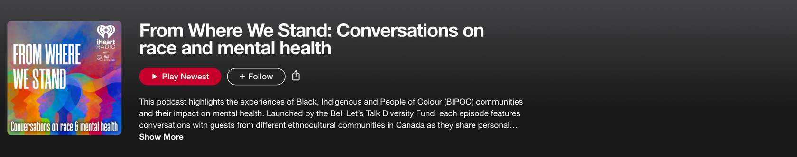
BIPOC Communities and Intersectionality
Members of the BIPOC community may also experience intersection with other marginalized groups and factors, including socioeconomic status, culture/religion, and challenges associated with finding culturally competent care.
In many cultures, mental health is perceived to be a private matter, and not something to be discussed in public (Kam et al. 2019). Mental illness may also be falsely perceived as “weakness” (Eisenberg et al. 2009), this self-stigma presenting a major barrier to help-seeking for members of the BIPOC community, discouraging help-seeking. The lack of representation of diverse therapists and other mental healthcare practitioners in Canada is another major barrier to help-seeking for members of the BIPOC community. The Canadian Psychologist Association (CPA) has recognized that there is a lack of representation of BIPOC mental health professionals within the psychologist profession and that there is a need to increase representation, as well as literacy about diversity.
Inequities in access to education, income, employment, housing, and food security continue to drive inequities in health and wellbeing between members of the BIPOC community and White Canadians (Public Health Agency of Canada, 2020). The unemployment rate among Black Canadians is higher than that of White Canadians as well as other visible minorities (Statistics Canada, 2021). Since many mental health services in Canada are either paid out-of-pocket, or through employment benefits, this presents a major barrier to help-seeking for BIPOC Canadians.
These inequities can also have an intergenerational effect, such as the inability to transmit wealth, which can predispose subsequent generations to experiencing similar struggles.
Individuals who are members of both the BIPOC and LGBTQ2S+ communities experience being a "multiple minority" as a result of this intersection. Individuals who are multiple minorities are often subjected to compounding systems of oppression. In this case, for example, individuals might experience homophobia, biphobia, racism, and transphobia (Resnick 2022).
An intersection with cultural perceptions may also exist here, placing additional pressure on individuals who find themselves at this intersection. For example, studies suggest that homosexuality is less accepted in Black cultures than in others (Glick and Golden 2010).
Post-Module Self-Reflection
At the start of this module, we asked you to reflect on a few questions related to your privilege and experiences with intersectionality in your own life. Having worked through this module, review those questions once again. Have your answers changed?
How do you self-identify? What communities are you a part of?
Think of an experience where you felt conscious of your own race, class, gender, migration status, disability, sexual identity, or other aspects of your identity.
How do your identities affect the role that you have in group settings or in personal relationships?
Do you consider yourself to be a privileged person? Why or why not?
Resources
Hope For Wellness Help Line
Offers immediate help to all Indigenous peoples across Canada (24 hours a day, 7 days a week). Services include: counselling over the phone or on chat in English or French. Phone counselling in Cree, Ojibway, Inuktitut available upon request.
De dwa da dehs nye>s
Aboriginal Health Centre provides programming in 7 areas: Health Care, Health Promotion, Out Health Counts, Advocacy Services, Children's Programs, Mental Health Programming, and Traditional Healing to Indigenous community of Hamilton, Brantford, and Niagara.
Talk For Healing
Indigenous Women can get help, support and resources seven days a week, 24 hours a day, with services in 14 languages.
LGBTQ+ Youthline
Youthline offers confidential and non-judgemental peer support through telephone, text and chat services. Get in touch with a peer support volunteer from Sunday to Friday, 4:00PM to 9:30 PM.
Support Our Youth
Support Our Youth provides health promotion services and programming centred on supporting the health and well-being goals established by LGBTQ2S+ youth and young adults, many of whom are homeless, racialized, and newcomers to Canada. They also host Black Queer Youth (BQY), a weekly drop-in group that celebrates Black queer and trans spectrum people's experiences and accomplishments.
Kid's Help Phone LGBTQ+ Space
Kids Help Phone has developed a space on their website including resources about Pride, gender identity, real-life experiences, sexual orientation, discrimination and more. Info, tips, tools and stories to offer support, courage and empowerment.
Black Youth Helpline
Black Youth Helpline serves all youth and specifically responds to the need for a Black youth specific service, positioned and resourced to promote access to professional, culturally appropriate support for youth, families and schools. Open everyday 9am-10pm.
Healing in Colour
A directory of BIPOC therapists who are committed to supporting members of the BIPOC community in all intersections. By helping to connect the community in this way, Healing in Colour aims to revitalize a legacy of healing, liberation work and resiliency practices that have been lost/taken.
Across Boundaries
Across Boundaries provides equitable, holistic mental health and addiction services for racialized communities.